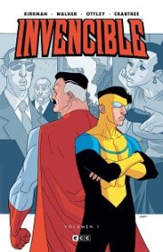
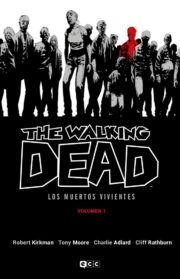
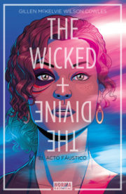
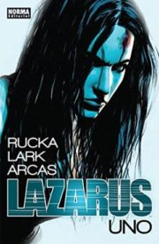
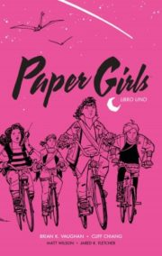
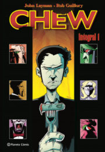
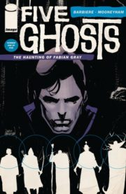

Invincible
Mark Grayson, un chico normal y corriente
de instituto, la única diferencia respecto a
los demás es que su padre, Nolan Grayson, es
Omni-Man, el superhéroe más poderoso de la Tierra
y perteneciente al supergrupo The Guardians of the
Globe. A los 16 años, comienza a desarrollar superpoderes
trabaja como superhéroe bajo la tutela de su padre.
Ocasionalmente colabora con el Teen Team formado

Clase Letal
nos narra las desventuras de Marcus López,
un joven huérfano sintecho con un pasado oscuro
que es reclutado por la escuela Kings Dominion,
un centro académico secreto en el que adolescentes
de los más diversos orígenes son formados y entrenados
para convertirse en los mejores asesinos del mañana.
Allí, Marcus no solo se verá amenazado por su pasado y
por las letales maniobras de su escuela, sino por algo
casi igual de terrorífico: encajar en su nuevo instituto.

The Walking Dead
Catalogar Los muertos vivientes como una historia de
zombies sería hacerle un flaco favor a la historia, porque
por encima de todo es una historia sobre la vida (y la muerte),
sobre el comportamiento del ser humano y cómo este varía en
función de los hechos o de aquello que la persona lleve dentro.
Los grises lo son más que nunca y deja de haber buenos humanos
en una situación nueva en la que todo vale en favor de la
supervivencia.

The Wicked and the Divine
Cada noventa años, doce dioses regresan como jóvenes.
Serán amados. Serán odiados. En dos años, todos estarán muertos.
Está ocurriendo ahora. Está volviendo a suceder. The Wicked + The Divine
nos propone una reinvención de la mitología en la que deidades procedentes
de distintas tradiciones se reencarnan en estrellas del pop que despiertan
encendidas pasiones entre sus seguidores. Su única misión es vivir rápido,
vivir intensamente, vivir como nunca nadie ha vivido… pues pronto no serán
más que bonitos cadáveres.

Lazarus
la historia de Forever y la familia Carlyle, ambientada en un distópico
y cruel futuro en el que la sociedad solo está compuesta por unos pocos
privilegiados y una mayoría de esclavos, cuya vida está en manos de los
miembros de la familia a la que pertenecen.Exponen de manera brillante
las claves de la deriva política y social de nuestra época, así como las
factibles consecuencias que podrían tener en un hipotético futuro la
acumulación de riquezas en manos de unos pocos, la falta de escrúpulos de
las grandes corporaciones que exprimen al individuo, el agotamiento de los
recursos naturales y el control de los restantes

Paper Girls
cuentan la historia de cuatro repartidoras de papel de 12 años.
Una mañana aparentemente normal, están en sus bicicletas, repartiendo
periódicos, cuando se ven inmersas de cabeza en una misteriosa aventura
de ciencia ficción es un viaje extraño que te sumerge dentro de la vida
de sus cuatro protagonistas femeninas. El miedo, la inseguridad, la madurez
sexual, la identidad sexual, el feminismo, la igualdad, la religión y sobre
todo la amistad son temas que dejan los viajes temporales en segundo plano.
La combinación de personalidades distintas, humor agudo, y la amistad poderosa.

Chew
Un agente que puede ver el pasado de la comida,
dibujo expresivo tipo cartoon, un mundo loco,
todo eso es chew pero de que va realmente,
bueno es una serie policiaca, con humor, drama,
algo de noir, ciencia-ficción, llena de locuras
y con un final de levantarse a aplaudir.
¡Ah sí!, y comida, mucha comida.
No dudes en degustarla.

Five Ghosts
Fabian Gray, es un buscador de tesoros que mediante una piedra
que encontró (y se le incrustó en el pecho) canaliza cinco espíritus
de grandes personajes literarios míticos (los cinco fantasmas del nombre
de la serie): el mago, el arquero, el detective, el samurái y el vampiro.
Estos espíritus de la literatura clásica le dan poderes que utiliza en sus
aventuras, persiguiendo sus objetivos. Pero también le generan una maldición
que lo atormenta física y mentalmente, a la vez que la misma piedra que le da
sus habilidades generó que su hermana quedara incapacitada.

Los Proyecto Manhattan
Reune a brillantes mentes científicas con el objetivo de crear la primera bomba
atómica, sino que utilizan de manera desvergonzada a figuras como Joseph
Oppenheimer, Yuri Gagarin, Enrico Fermi, Richard Feynman o el mismísmo Albert
Einstein para formar un grupo imposible que, como no podría ser de otra forma,
reconduce la historia que todos conocemos hacia un festival del anacronismo y la
locura: tecnologías alienígenas, múltiples dimensiones, doppelgängers,
organizaciones secretas, ex-presidentes reconvertidos en inteligencias artificiales
transhumanas y mucho mas en una historia con humor negro.

The Maxx
Maxx es un vagabundo al que su asistente social, Julie, ayuda
frecuentemente. La mujer es la reina Leopardo del Outback, un
mundo creado por su subconsciente como consecuencia de un
traumático suceso. Este extraño universo onírico es utilizado
para psicoanalizar a los personajes, donde acontecen terribles
peligros e imaginativas criaturas